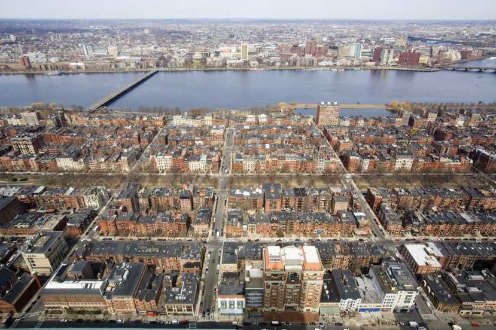

Home
Introduction
Fossil Fules
Clearing Forest
Fertilization
Global Warming
Conclusion
In result global warming and climate change many animals lose their habitats due to the rising temperatures. Global warming is melting ice caps in the Arctic. All that water has to go somewhere. This results in sea levels rising all over the planet. Not only are Arctic animals losing their habitats, but coastal cities around the world are at risk of very bad flooding. According to Erin A. Thead the rate of sea level rise in the 20th century was greater than it had been in 2,800 years, and sea levels has risen almost 3 inches globally in the most recent 20 years and risen on an average of ⅛ inch each year. The flooding is now affecting humans now. Boston is an American city that has developed a comprehensive climate resiliency plan. Since it is on a coastline, Boston's greatest risk from climate change are flooding and storm surge.
 html>